OpenSplice Launcher
An overview of OpenSplice Launcher, how to use, configure and more.
An overview of OpenSplice Launcher, how to use, configure and more.
The tools tab provides easy access to the tools bundled with OpenSplice. If RnR Manager is installed, it can be also be started from the tools tab.
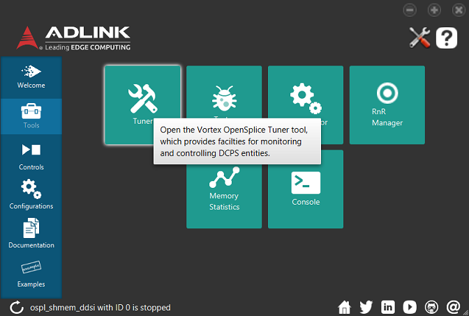
The controls tab provides the ability to control and interact with OpenSplice.
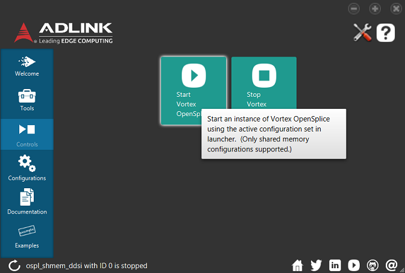
The control buttons are enabled if the active configuration is a shared memory deployment. Otherwise, they are disabled.
When the user clicks on the "Start OpenSplice" button, Launcher starts an instance of OpenSplice using the active configuration set in Launcher. The configuration can be set in the Environment tab or in the Configurations tab. A progress bar is displayed in the bottom toolbar of the Launcher window until the execution of the command completes.
Once the Launcher has completed the control's execution, a notification popup message is displayed indicating its result. The status of the OpenSplice instance is updated in the bottom toolbar to indicate that it is running.
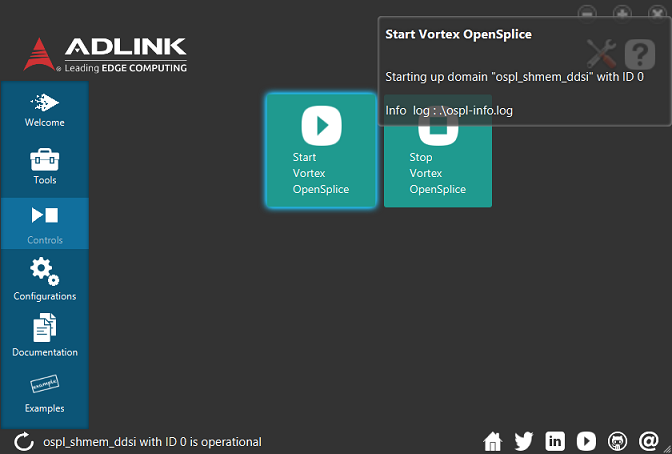
When the user clicks on the "Stop OpenSplice" button, Launcher stops the running instance of OpenSplice associated to the active configuration set in Launcher. The configuration can be set in the Environment tab or in the Configurations tab. A progress bar is displayed in the bottom toolbar of the Launcher window until the execution of the command completes.
Once the Launcher has completed the control's execution, a notification popup message is displayed indicating its result. The status of the OpenSplice instance is updated in the bottom toolbar to indicate that it has been successfully stopped.
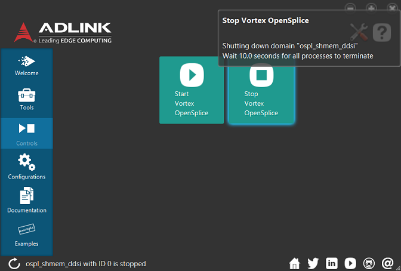
The configurations tab lists all of the configurations bundled with OpenSplice.
For each configuration a brief description of the configuration is provided.
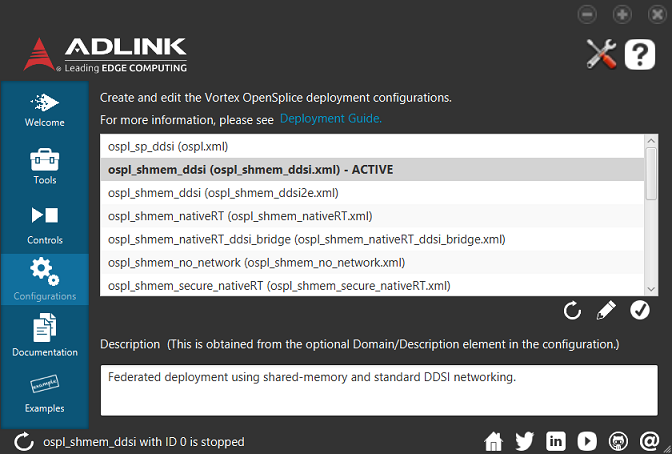
Pressing the Refresh button refreshes the configurations list with the contents of OSPL_URI, OSPL_HOME\etc\config directory, and user specified configurations directory. Duplicates are removed if they exist in more than one of these locations.
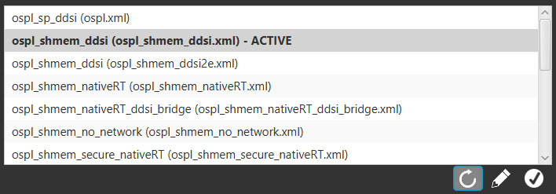
Selecting a configuration in the list and then clicking on the check mark icon will set that configuration as the default configuration used within OpenSplice Launcher. A warning is displayed if a configuration no longer exists when trying to set it as default configuration.
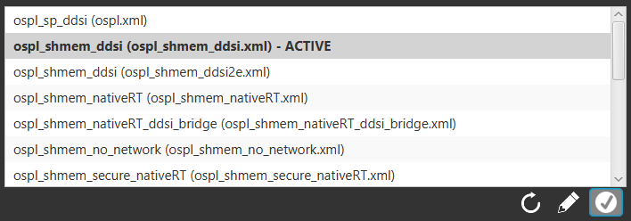
Selecting a configuration in the list and then clicking on the icon that looks like a pencil will open OpenSplice Configurator for that configuration so that it can be edited. A warning is displayed if a configuration no longer exists when trying to set it as default configuration.
Note: If OpenSplice's installation directory is write-protected, the tool will need to be run with elevated permissions in order to save modifications made to the default configuration files found in OSPL_HOME\etc\config. The same applies to user-specified configuration directories.
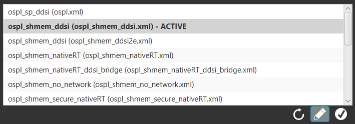
The documentation tab lists all of the documentation artifacts bundled with OpenSplice.
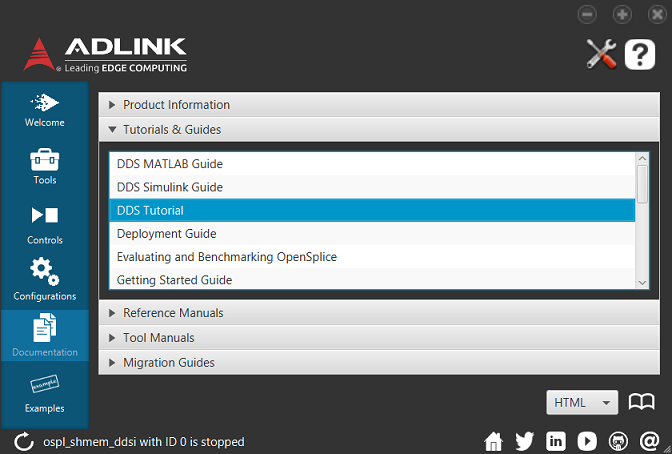
There are two ways to open a selected document. The first is to double click on the selected item. The second is to click on the book icon in the bottom right corner.
The document type can be set using the dropdown in the bottom right corner. HTML and PDF document types are supported.
The examples tab lists some of the examples that are bundled with OpenSplice and allows a user to build and run the example.
Note: If OpenSplice is installed in a write-protected directory, the application will need to be run with elevated permissions in order to build the examples.
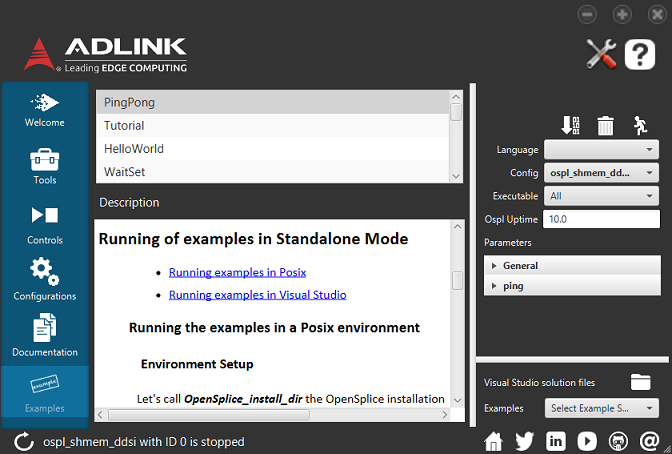
Clicking on the Build icon will compile the example for the language that is selected in the language drop-down box. A command prompt or terminal will open showing the progress and result of compiling the example.
Launcher expects that the toolchain required to build the example for the chosen language are available in the environment of Launcher. For example, to build with Visual Studio this may require running vcvarsall.bat. However, the Visual Studio VCINSTALLDIR environment variable can be specified in the Environment tab in the Settings pane. Compiling Java will require that JAVA_JDK_HOME\bin be found on the path.
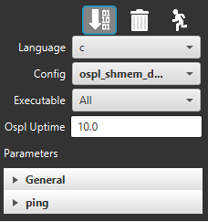
The C/C++ examples are built in a folder specified in the "C/C++ Examples Build Path" found in the Environment tab in the Settings pane. The default is $HOME/ZettaScale/OpenSpliceDDS/examples, but can be changed in the Settings pane. This pane also allows the user to specify a CMake "generator" to create the project build system, as well as the "build type" (e.g. Release, Debug, etc.). Please consult the CMake documentation for the generators and build types available in your platform.
Clicking on the Clean icon will remove all the artifacts created by building the example for language that is selected in the language drop-down box.
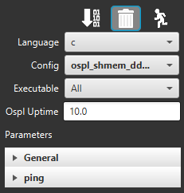
Clicking on the Run icon will execute the executables that resulted from building the example for the language that is selected in the language drop-down box. A command prompt or terminal will open for each executable showing the output produced by that executable. If running Java executables, JAVA_HOME is expected to be available in Launcher's environment path.
The user can select a configuration to use in the configuration drop-down box. By default, the active configuration set for Launcher will be used. In the drop-down box, the active configuration is displayed in bold. The active configuration can be set in the Settings dialog or in the Configurations tab. If the selected configuration uses the OpenSplice shared memory feature then Launcher will start the OpenSplice daemon before running any of the executables.
Some examples have more than one executable. The Executable drop-down box allows the user to select All or a specific executable to run. This would allow for running one of the examples across the network by using Launcher to start the executables on different computers.
If running an executable with a shared memory configuration and there is no ospl instance running with that configuration, an ospl instance will be launched with it. The uptime in seconds of the Splice Daemon before it will shutdown automatically can be specified in the Ospl Uptime field. By default, all examples will have a minimum of 10s uptime. A longer or equal time can be specified, but not shorter. If a single process configuration is selected, the field is disabled.
The Parameters section lists all of the command line parameters that can be passed to the executables when they are run. Hovering over the parameter will display information on what the parameter is used for.
The Description section shows the documentation for the example. It is the same as the documentation you will find in each of the examples folders in your OpenSplice installation.
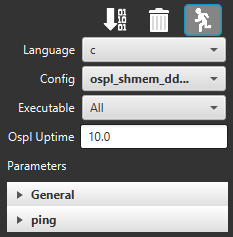
On Microsoft Windows platforms, users have the ability to open the example solution files for the OpenSplice examples in order to inspect and build them.
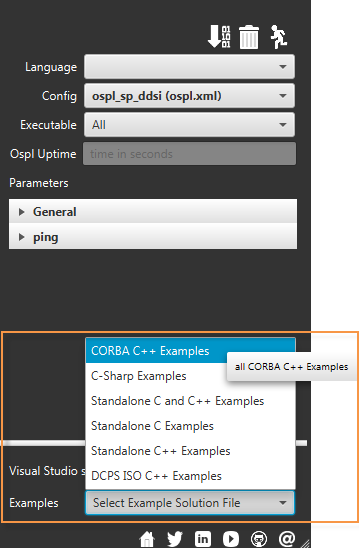
Clicking on the Open Visual Studio solution file icon will open the selected example solution file in the Microsoft Visual Studio editor.
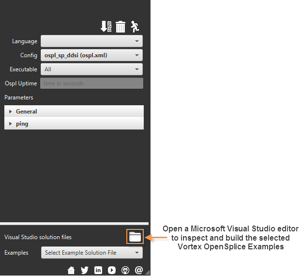
The version of Microsoft Visual Studio that is used to open the example solution files is used by either inferring from the VCINSTALLDIR environment variable or by looking in the PATH to see if devenv.exe is found. If the executable cannot be found in either locations, a notification will pop up instructing the user to set the appropriate environment variables.
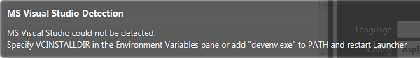
The Configuration Settings pane shows information regarding the OSPL installation, environment variables, and user configurations location
Starting Launcher from the start menu or from a terminal with the OSPL_HOME environment variable set will identify the name, date, and version of OpenSplice being used to populate the content of Launcher.
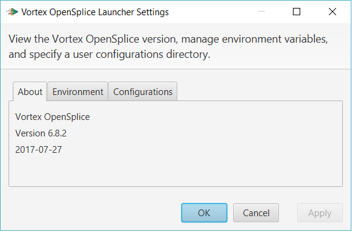
Setting environment variables in this tab allows the user to quickly customize their environment. Overriding any settings will make it available to all the tools which are used by Launcher. Specifying the VCINSTALLDIR allows the user to build against a specific version of Visual Studio to run the examples without having to migrate the solution files. Changes to the URI will trigger a refresh of the configurations list in the Configurations tab.
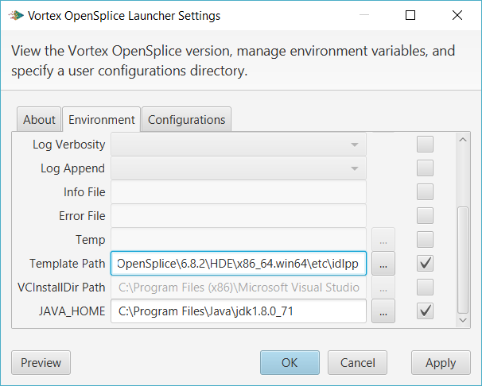
To preview the environment variable settings, select the Preview button.
The Preview Environment Variables dialog allows the user to view the environment variables after being modified by the user. These settings will be available to the tools and the Launcher start and stop scripts. The Copy to clipboard button copies the environment variable settings to the clipboard.
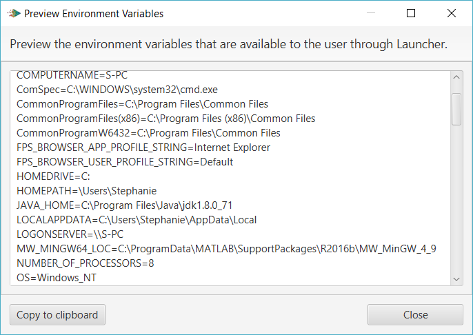
Overriding the OpenSplice configurations directory allows the user to run and edit their own configurations. These will populate and trigger a refresh of the Configurations tab.
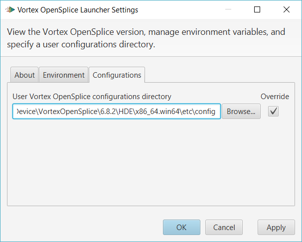
OS Requirements
Software Requirements
More support and requirements information
This information is based on Oracle's published JavaFX 2 Certified System Configurations and Oracle JDK 8 and JRE 8 Certified System Configurations, last accessed on May 5, 2014 and is subject to change. Check this page regularly to look up support for your platform.